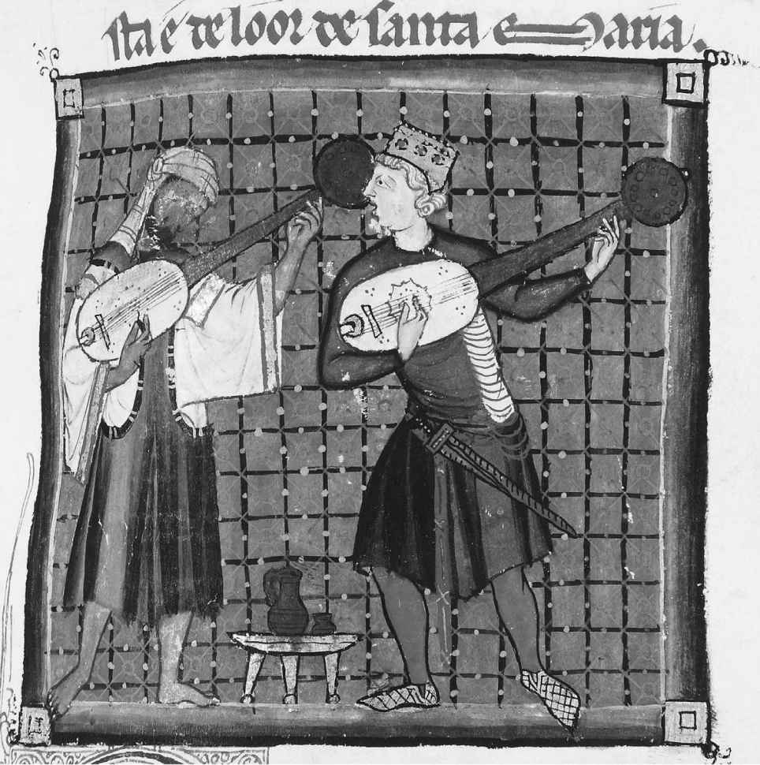
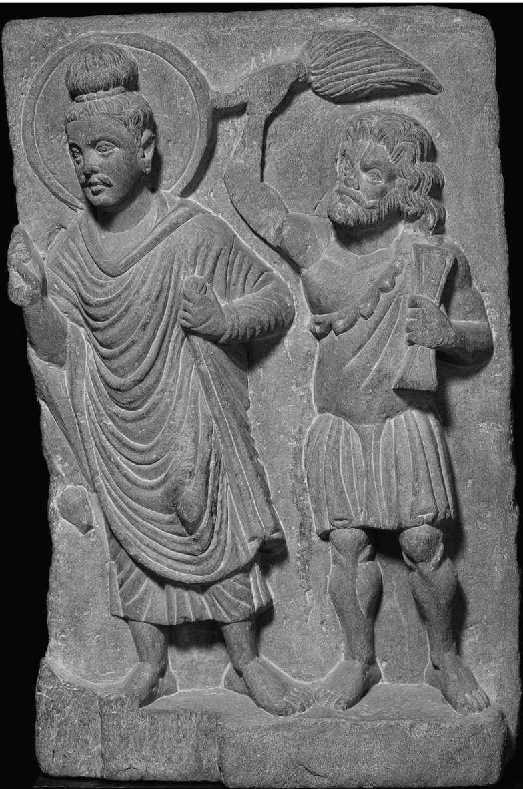
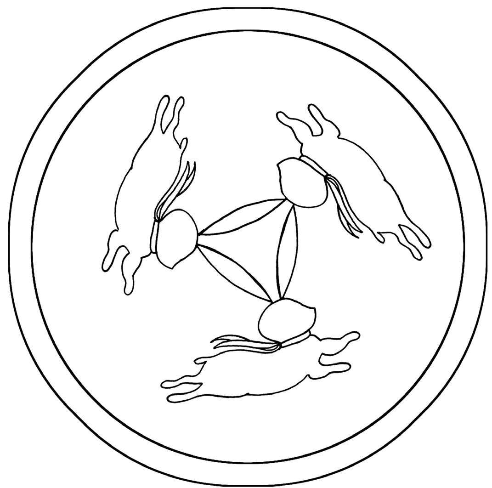
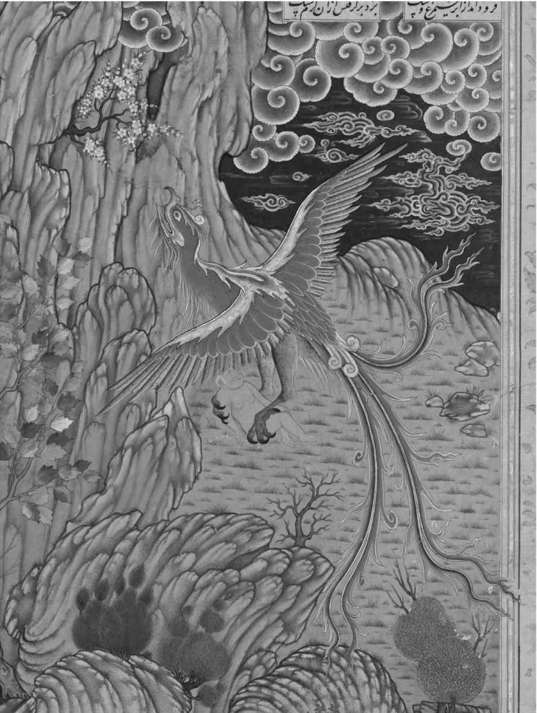
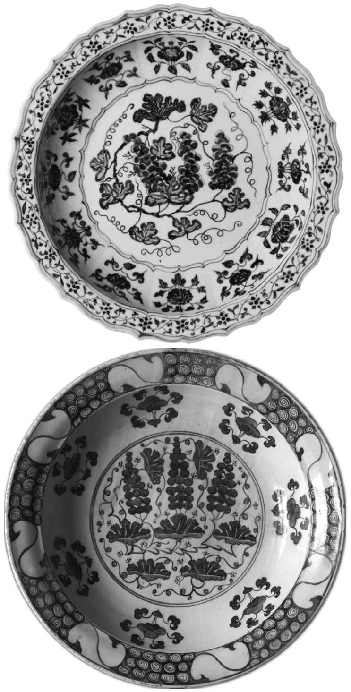

1980年代初，我在台湾学习中文。一天早上，我打开电视，碰巧看到一个儿童节目。一位年轻的老师给孩子们分发盒装果汁。但在开始喝之前，她让孩子们做了一个试验：
她的答案是“团结就是力量”。这个故事的主题是普世的。早在罗马采用古代束棒（一捆桦木杆和斧头）的形象作为国家的象征时，它就已经非常古老了。在伊索的一则寓言（《一捆木棍》）中，一位父亲教给儿子们同样的道理。从那时开始，这个故事便在整个欧亚大陆不断被重复。它出现在成吉思汗家族的内部纪事《蒙古秘史》 [36] 中，其中记述了一位女性祖先阿兰豁阿用一捆箭矢劝诫自己暴躁的儿子们要团结。托尔斯泰在他的寓言集中改写了这个故事。1922年，贝尼托·墨索里尼借用束棒（fasces）来命名其党派——法西斯（Fascist）党。在美国国徽中，鹰的左爪抓着13支笔直的箭矢，右爪抓住的橄榄枝又削弱了这种好战象征。而在2011年重拍的电影《猩球崛起》中，（黑猩猩）恺撒也用一把折断的筷子来激励猿猴们团结。
丝路上的故事
这类寓言和主题在北非和欧亚大陆流传了数千年。和其他由丝绸之路联系起来的事物一样，亚历山大东征（公元前4世纪）可能把伊索传统带到了印度北部和中亚。在亚历山大的时代刚刚结束时，确实有古典时期的希腊作家提到有一本伊索寓言，但它未能存留下来。伊索寓言并无定本，有人甚至质疑这位聪明的奴隶寓言作家是否真的存在过。我们现在称为伊索寓言的故事是在接下来的数个世纪里结合了其他文化和后世的故事不断添写的结果。
印度民间传说也为这一欧亚大陆乡土故事体系做出了贡献。由于希腊和印度之间长期交流的传统，我们通常很难说清某个具体的故事到底是源于希腊还是印度，但有两份印度的书面资料确凿无疑地存在于这个不分彼此的组合中——或者说反映了印度早期民间传说在该组合中的存在。《本生经》是有关佛陀作为人、神或动物的各个前世的故事合集，其中包括547个民
间故事，收录在《三藏》（玄奘后来赴印度收集的三类佛典）中。这些公元前1千纪的故事大致与伊索寓言传统同期，在公元前4世纪汇入佛教正典，公元前1世纪被书面记录下来。在《本生经》中有一个故事，是说菩萨看到一只豺正在吹捧停在果树上的一只乌鸦。得意的乌鸦摇落了一些果子给那只豺。在伊索寓言版本的《狐狸与乌鸦》中，乌鸦衔着奶酪，在张嘴回应狐狸的甜言蜜语时，奶酪掉了下去，被狐狸一口吞下。这个版本于公元1世纪以希腊语和拉丁语记录下来，后因让·德·拉封丹《寓言》及其他复述版本而在现代欧洲家喻户晓。
《本生经》中的其他故事被翻译成波斯语、叙利亚语、阿拉伯语和希伯来语，以及拉丁语和希腊语，进入了欧洲的文学传统。例如，在两个略有不同的《本生经》故事中，一个婆罗门祭司利用一对鹦鹉当间谍，向他汇报在他出差离家时妻子通奸的举动。在《一千零一夜》版本中，在鹦鹉报告了妻子的过错后，妻子成功地让丈夫相信鹦鹉疯了。如果不是一个婢女告密，她本可全然逃过丈夫的暴怒。距离这个故事在印度首次被整理出来大约1800年后，乔叟笔下神采奕奕的“巴斯妇”又用到了这个典故，这一回，妻子在开场白中为自己撒谎辩解说：“一个贤明的妻子如知道怎样对自己有利/应能使他相信饶舌鸟已发了疯/且拉过婢女来证实。” [37]
《本生经》的故事也传播到了东方。《失收摩罗本生》讲述了一条母鳄鱼想吃掉一只健壮的小猴子（菩萨）的心。母鳄的配偶答应把猴子带给她，他提议把猴子驮到恒河对岸，那里的果树上结的果子更好吃，以此来诱骗猴子。猴子将计就计，就在鳄鱼游到河中央，要把他拖入水中让妻子吞掉他的心时，猴子说他把心留在附近的一棵无花果树顶上了。鳄鱼带他回岸上去取他的心，猴子灵巧地逃脱了，还站在高高的树枝上嘲笑头脑迟钝的捕食者。公元251年，一个名叫康僧会的和尚把这个故事翻译改写成中文。在早期的中文版里，鳄鱼被改成了乌龟，猴肝（中国人认为肝脏是情感之源）代替了猴心。此后又出现了吐蕃、蒙古、日本和高丽的文字和民间故事版本，以及中文的各种变化形式。89在如今仍在流传的朝鲜版故事中，一只乌龟想要把肝脏送给水宫中生病的龙，但兔子，而非猴子，智胜了乌龟。（就像北美洲的兔子布雷尔 [38] 的故事一样——那些故事本身亦与同一个非洲——欧亚寓言传统遥遥地关联着——高丽的兔子也是个聪明的家伙。）
除了具体的故事之外，某些文学体裁和风格也成为欧亚白话小说的共同元素。《本生经》的一些故事是宗教性的，另一些与佛教教义没有什么明显的联系，只是以佛陀训诫弟子的话作为开篇和结语，为故事搭建出框架结构，赋予其共同的意义。这些故事给出了训诫，并将佛陀的若干前世等同于不同的其他个体。这种框架故事结构在第二部有影响的印度故事集《五卷书》中更加明显。在这本书里，野兽和各种恶棍或人类榜样的故事（有些与《本生经》重复）都被设计为教育王子们的训诫。在其五卷文字内还有一些是层层嵌套的故事。到公元570年，这部作品被翻译成波斯语，8世纪被译为阿拉伯语，名为《卡里来和笛木乃》。这一阿拉伯语译文又（从11世纪起）被译为中世纪欧洲各种白话语言，后来收入《比德帕伊寓言》中。德语版的《榜样之书》（1483）是欧洲最早出版的译本之一——证明了白话故事的流行以及纸张和印刷的直接商业效应。框架故事结构本身也被广泛效仿：例如，在《一千零一夜》传统中，山鲁佐德每晚都给她心怀杀机的丈夫讲述嵌套的故事。14世纪薄伽丘的《十日谈》以及后来乔叟的《坎特伯雷故事》都采用了类似的结构。薄伽丘那些有趣的故事出自十个贵族青年之口，他们为了逃离佛罗伦萨的黑死病而来到乡下的别墅；乔叟笔下更为粗俗的“各种乡下人”则是在朝圣路上讲述他们的故事。
印度民间故事体裁的另一个方面在中国确立和发展起来，并有可能传入日本和东亚其他地区。《本生经》和《五卷书》的故事都是以所谓说唱风格写就的，那是一种散文和韵文的混合体。韵文段落出现在叙述的关键时刻，可能是吟诵或在鼓和鲁特琴的伴奏之下演唱出来的，在南亚，这种表演风格一直延续到现代。敦煌藏经洞里发现的故事看来是这一传统的中式表达。这些故事是最早的白话（相对于文人雅士的）书面汉语实例。其中一些故事有着佛教主题，另一些则是世俗的，但令人称奇的是，与更早期的中国小说不同，它们是以说唱风格写就的，这在此前的中国文学中从无先例。这些保存在敦煌的唐代白话叙事文（其中也包含来自中国其他地区以及印度和中亚传说的故事元素）影响了后期中国（元代）戏剧和（明清）白话小说的发展，这两种文体也都运用了散文和韵文交替的形式。
如此说来，欧洲和东亚的中世纪和近代白话小说的传统都融合了本地民间传说与来自公元前1千纪的印度以及希腊——印度融合体的体裁、风格以及故事和主题宝库。这一丝绸之路的影响不只见于故事集中，还体现在东西方最早的小说或原型小说中，其中包括紫式部的《源氏物语》（11世纪初）、塞万提斯的《堂吉诃德》（17世纪初），以及曹雪芹的《红楼梦》（18世纪中叶）。
鲁特琴
新疆最著名的巴扎在喀什。如今，和喀什老城的很多地方一样，这个巴扎也经过了消毒、管理、现代化与和谐化，变成了昔日集市的一个朦胧回响，但在不久之前，人们还可以在咫尺之地买到杏子、藏红花、茶叶、宝莱坞主题的割礼会请柬、汽车零件、农具、小块毡毯、丝绸，以及手机卡等物件。再走上几步，还可以剃头或拔牙。过个马路就能买到活羊或者马匹。
欧美游客偶尔会在喀什的家畜巴扎上试骑马匹。在美国亚利桑那州或英国萨里郡受过骑马训练的人能在中国新疆（或者蒙古、哈萨克斯坦）跨上一匹马，马和人双方都对一应程序心知肚明，想想实在惊人。这种马虽然是按照骑乘用途而培育的，但交流却绝非人马相遇的天然结果。相反，这是文化造就的，人和马都习得了一套信号；当被驯化的第一匹种马与人进行了浮士德式的交易、为获取拥有母马的机会而接受驾驭时，这套知识体系就开始逐渐为双方所接纳吸收。马具和骑乘方式固然不同，但外国骑手可以骑乘中亚马匹的事实证明，过去六千年来，马术文化是全球共享的。
在喀什的另一个机构，即老城里的买买提艾敏·阿巴拜科日弦乐器店，可以看到与之相媲美的现象。首次拜访的游客会为那里的景象惊艳：墙上挂着各种精美的鲁特琴和六弦古提琴，它们那杏仁形或瓜帽形的琴身、兽角的遗迹、凸出的琴棘、弹拨的喧闹声、位置古怪的琴品、7根和11根一组的琴弦，全都因洛可可式的珍珠镶嵌而熠熠生辉。这些乐器的样式让我们感到陌生，但它们所含的弦鸣乐器的基因却是我们熟悉的，以至于任何西方吉他手或摇滚乐手都可以随手拿起一把琴，摸索出调音和琴品的音程，弹拨出一个曲调来。和马术一样，这也是欧亚大陆的发明散播到全球各地的结果，这一次是鲁特琴及其衍生品。
在欧亚大陆和北非几乎所有的文化中，“传统”乐队中都有鲁特琴。最早被描画出来的鲁特琴出现在美索不达米亚的阿卡德帝国（公元前2370—前2110年）的圆柱形印章雕刻和苏萨（伊朗西部）的一块界碑上，其琴颈狭长、琴身小巧。鲁特琴是男人演奏的，那些人有时赤裸，往往近乎野兽。那么，鲁特琴是不是美索不达米亚的发明呢？或许如此，但它与中亚游牧民族也许还有更早的联系，鉴于最早的鲁特琴上那些古怪的、可能是萨满式的图像画法，动物材料（肠子、兽皮、马鬃）在弦乐器生产中的重要作用，以及后期短颈鲁特琴的形制和用弓演奏的做法都来自中央欧亚。
喜克索斯人——乘坐战车的游牧入侵者——在公元前2千纪初把鲁特琴带到了埃及，这些乐器出现在新王国时期（公元前1550—前1070年）的宴乐绘画中，但此时的弹奏者既有男人，也有女人。希腊从公元前2千纪或前1千纪起便有了里拉琴（一种形似竖琴的乐器），但得到鲁特琴的时间却要晚得多，是在亚历山大东征波斯、中亚和印度北部之后才获得的。希腊人把他们的鲁特琴叫作潘多拉琴，这个名字源于苏美尔语词pantur （“弓——小”），从这个词又衍生出了一长串弦乐器、弹拨乐器和鼓的名字：三弦琴（pandore）、曼朵尔琴（mandore）、曼陀琴（mandola）、曼陀林琴（mandolin）、曼多拉琴（vandola）、班杜里亚琴（bandurria）、班朵拉琴（bandore）、班卓琴（banjo）、弹拨尔琴（tanbur）、坦布尔琴（tunbur）、弹不拉琴（tunbura）、塔姆布拉琴（tamboura）、冬不拉琴（dombra）、鼓（tambour）和铃鼓（tambourine）。
这类鲁特琴中有很多一看就是近亲：包括波斯的巴尔巴特琴、西欧的鲁特琴、阿拉伯的乌德琴、各种印度鲁特琴、中国的琵琶、韩国琵琶和日本琵琶在内的一系列“短颈鲁特琴”。这种鲁特琴的琴身呈梨形，圆背，琴头往往与琴颈有一个夹角，并且琴颈较短，宽度有时足以容纳多根琴弦（因而和弦较多），它在整个丝绸之路沿线都有着很大的影响。现存最早的描绘来自公元前1世纪巴克特里亚的哈尔恰扬（Kalchayan）遗址，位于如今的93乌兹别克斯坦南部。其他描绘见于公元1世纪印度北部的雕塑和2到4世纪的健驮逻雕塑（阿富汗）。
短颈巴尔巴特式鲁特琴可能源自中亚，或者至少源自希腊——贵霜——印度多文化联结的地区。波斯史诗《列王纪》中提到了从印度北部迁徙到波斯的一万名洛里人（Lōris），个个都“精通巴尔巴特琴艺”。
这种乐器在波斯萨珊王朝（公元224—651年）期间蓬勃发展。有一个传奇故事讲述巴尔巴德，这位萨珊君主“得胜王”库思老的宫廷里最有名的鲁特琴师和音乐理论家，曾用巴尔巴特琴把君主爱马的死讯弹奏出来。哈萨克斯坦和吉尔吉斯斯坦的吟游诗人们也讲过一个类似的故事：他们用各自国家的鲁特琴，即冬不拉和火不思弹奏音乐，向可汗传达了王子的死讯。游牧民族（匈奴人或突厥人）把巴尔巴特琴从波斯经过中亚带到了中国北部。甚至中文里的“琵琶”一词可能就是来自“巴尔巴特”。韩国和日本的这种乐器都是源自中国唐朝的形制。
公元600年前后，阿拉伯人从波斯吸收并改造了巴尔巴特琴，制造出一种名叫乌德琴的乐器；那是一种没有琴品的鲁特琴，琴身用薄木板制作，而不是由一整块木头雕刻而成（阿拉伯语“ūd ”意为木棍或薄板）。乌德琴传入了摩尔人统治的西班牙，后来又进入意大利。13世纪，神圣罗马帝国开明的皇帝“西西里的腓特烈”（腓特烈二世，1194—1250）把它带到了德国南部的巴伐利亚，开启了那里制作鲁特琴的传统，后来又回流到意大利和其他地方。各个西欧语言中“鲁特琴”（lute）的词源就是阿拉伯语的“乌德琴”（al-'ūd ）。
在伊斯兰世界和中国，乌德琴/琵琶都在中世纪成为流行一时的乐器。后来不知为何，尽管它与穆斯林世界有关，却在15—16世纪基督教的欧洲被冠以“乐器王后”的称号。在文艺复兴的巅峰时期，任何有学识、有产业的欧洲人都应当会演奏或至少拥有一把鲁特琴——它频繁出现在这段时期卡拉瓦乔、提香、弗美尔等欧洲画家的肖像画和静物画中。于是，这种从中亚的阿富汗出口的乐器，就得到了有如后世的钢琴一般的流行程度和地位，大陆两端的知识分子都以演奏和拥有它为乐。何以至此？
原因之一或许是鲁特琴的设计，这种设计让人很容易想象其音高的变化：琴弦沿指板排列，琴品（或琴品的位置标识）以合适的角度横跨其间，形成一个矩阵，在视觉上有助于理解在按下整个指板的某个点位、缩短某一根琴弦时，声音会发生怎样的变化。人无法通过人声或者管乐器或打击乐器“看到”声音的变化：因而毕达哥拉斯在琴弦上进行他开创性的音乐试验绝非偶然，只不过他最初的灵感来自锤子砸击的声音。跟鲁特琴相比，只有键盘乐器（后来欧洲人开发的一种乐器）为音乐研究和建立理论提供了更直观的视觉辅助。

图7 在一部13世纪的欧洲手稿中，穆斯林和基督徒在演奏乌德琴和鲁特琴。短颈鲁特琴很可能源于阿富汗，并从那里传播到波斯演变成巴尔巴特琴，传到阿拉伯演变成乌德琴，传到中国演变成琵琶
不管出于什么原因，琵琶合奏的音乐成为中国唐朝的主要宫廷音乐，特别是以大曲的形式，这是由相关基调组成的一套舞曲，那些基调主要是从位于如今新疆的中亚绿洲城市龟兹借用并吸收的。以琵琶演绎的这种音乐的调式和音阶发展成为唐代八十四调的音乐理论。整套乐曲、理论和琵琶本身都被日本采纳为固定的形式，乃至到了现代，日本的“唐乐”（tōgaku ）仍在重复着中世纪丝绸之路的音色和调式。
在欧洲，鲁特琴虽然的确是艺术音乐演奏的主要乐器，却并未成为音乐理论的典型代表。从大约公元1500年起，乐手们开始用右手手指来演奏，而不是用拨片或鹅毛来弹拨单一的音符。这种技术连同额外附加在鲁特琴上的琴弦，让鲁特琴师们得以演奏复杂的复调音乐（和弦与对位），从而使鲁特琴既可作为一种炫技性的独奏乐器，也可以为歌手伴奏。鲁特琴与风琴、古钢琴，以及其他新近出现的键盘乐器一起，在欧洲音乐增加和声复杂性的革命中，起到了核心作用。
然而，鲁特琴是在伊斯兰世界才发挥了最重要的理论作用。伊斯兰的音乐理论家们同时也是哲学家和科学家，他们面对的难题是把继承自希腊根源（包括毕达哥拉斯、亚里士多德、欧几里得和托勒密）、大体上停留在理论阶段，因而被认为是理想化的音乐学，与阿拉伯语、波斯语和突厥语世界里歌唱和演奏的真实音乐相调和。主要的问题始于乐律——如何在连续频谱的无限可能中定义不连续的音符，继而到音阶（音符的线性集合）的定义、音程（各音符间的距离）的定义，以及调式（具有某些旋律特质和情感关联的音符的集合）的定义。这在某种程度上是一个数学问题，伊斯兰“黄金时代”的博学者肯迪、法拉比和伊本·西纳（阿维森纳）等人通过把音符时值映射为鲁特琴颈上的指法，把这个问题具体化了。从未学习过希腊科学的音乐家札尔札尔和伊斯哈格·毛斯里同样用鲁特琴本身来讨论和捍卫本土音乐的声音，抵制希腊的音乐理论。
关于这些音乐上的分歧意味着什么，举例而言，诸位不妨想想大三度（C—E—G）所定义的“快乐音”的大三和弦；再想想小三度（C—Eb—G）“悲伤音”的小三和弦。但如何演奏一个频率恰在大三度和小三度之间 的音符，在本例中即E和Eb之间的音符？在现代钢琴上弹不出这个音符，但在无琴品的乌德琴（以及其他无琴品的弦乐器）上，把左手的手指放在大三度和小三度之间的位置上，即可做到。实际上，这个音符名为“中札尔札尔”（wusta Zalzal ，札尔札尔的食指琴品），正是以阿拉伯和波斯音乐特有的中立三度音程定名的，在希腊或后世的欧洲音乐中都没有这个音符。法拉比等人通过这样的四分之一音和其他微分音，调和了希腊理论与伊斯兰音乐实践。
这样的分析引发了一种对整个伊斯兰丝绸之路上使用的音乐进行分类的方法。波斯语把这种调式系统称作“达斯特加”（dastgah ），最常用的是阿拉伯词语“木卡姆”（muqam ）的各个版本，意为“位置”或“地点”。［南亚的“拉加”（Raga ）组织形式相似，并与木卡姆有一定程度的重叠；锡塔琴是一种有琴品的长颈鲁特琴——但琴品被设计成可移动的，正是为了适应各种拉加的不同音符时值，或称调式。］各个文化都有其各自的木卡姆作品或套曲，每一个在理论上都由音乐调式所定义，但实际上它们都偏离了严格的理论，而采用了有地方特色的节奏、舞蹈、歌词等作为其本质特征。某些木卡姆组曲与特定的民族或地区相关联。在前苏联的那些单一民族国家里，区域性的木卡姆经过了改编，其文字也由国家委员会、出版社和艺术院校确定，并晋升为民族音乐。令阿塞拜疆人自豪的是，1977年飞向太阳系边缘的“旅行者号”太空飞船上，随船的12英寸模拟唱片《金唱片》中收录了他们的一曲“木卡姆”，时长超过两分钟。在苏联民族政策的影响下，乌兹别克人和塔吉克人也整理了各自的“莎什木卡姆”（“六木卡姆”）——虽然它们都出自中亚的同一个传统。中华人民共和国正式推广维吾尔人的十二木卡姆作为“中国的”民间音乐形式，而不再强调其在伊斯兰木卡姆传统中的地位。尽管如此，维吾尔人还是为他们的木卡姆而倍感自豪，中国政府的努力为其在联合国教科文组织的《人类非物质文化遗产代表作名录》上赢得了一席之地。
视觉艺术
有不计其数的绘画、雕刻、建筑、织物、陶瓷，以及其他二维和三维实体手工艺品的实例可以表现丝绸之路沿线的联系和交流，也能够表明那些互动的性质。如果我们在费尔干纳发现了中国的青铜镜、在埃及的墓中发现中国制造的纺织品，或是在伊斯坦布尔的宫殿里看到中国陶瓷，我们知道一定是有人用大篷车或船只将其运送到那里的。但在西安——古时唐朝的首都长安——附近发现了含有波斯和中国元素的萨珊王朝风格的银盘又该如何解释呢？或者在喀拉库伦看到的法国银匠为蒙古宫廷制作的巨大喷泉酒吧？在这些例子中，物件是在本地制作的，而制作它们的工匠本人或许来自远方。蒙古人特别喜欢把专家送到四方、把他们召集到自己位于东方的首都，或是让他们在中国和伊朗宫廷之间互相交流。在蒙古人之前则是在中国生活的粟特人、突厥人和其他外国人，以及撒马尔罕甚或巴格达的中国俘虏，他们中的很多人都具备特殊的艺术技能。
因此，物件会迁移，物件的制造者也会迁移。而交流的第三种机制只涉及思想的迁移，也就是“刺激扩散”，即来自某地的某个主题、设计、风格或技术被他乡的其他艺术家和工匠发现和模仿。萨珊人由鸟、动物和神兽装饰的纺织品则全然是拜占庭的风格。希腊或伊朗的主题出现在汉朝或唐朝的中国金属制品或陶瓷上。中国的设计常常会在织物上远游至西方，出现在伊斯兰世界或欧洲的房瓦、绘画或其他介质上。
最后，还有些完全的混合体，已经不再能分辨出是哪个地区的传统，而是各种传统混合或协力造成的，比如在健驮逻发现的贵霜帝国时期的佛教造像，就融合了印度、伊朗和希腊的风格。这类混合体本身就构成了新的折中的传统。
光轮就是这类复杂扩散的一个例子。它出现在佛教以及稍晚一些的基督教图像中，甚至出现在莫卧儿的书籍彩饰中，表明了它与欧亚大陆的联系，学者们认为其共同的源头是伊朗传统。伊朗的神祇密特拉和先知琐罗亚斯德都被赋予或简单或呈“放射”状（配有光束）的光轮来表现其神性和威力的特征。更早之前，公元前1世纪钱币上的斯基泰、大夏和贵霜国王们也都被描画了光轮。在哈萨克斯坦的伊塞克坟冢，在一位人称“金人”的塞迦（斯基泰）贵族墓中发现了一枚戒指，上有一个带有完整放射状光轮的头像。这枚戒指可以追溯到公元前4至前3世纪。800年后，从公元4世纪君士坦丁大帝的时代起，罗马皇帝们和基督首次被画上了光轮。如此说来，光轮从居住在欧亚大草原上的说印欧语的人群扩散到大陆两端基督教和佛教人物的画家和雕塑家，就不再只是物件或工匠的迁移：这是在漫长的时间里长距离传播的一种思想，其传播无疑是通过物件运输和人类迁移两相结合才实现的。

图8 公元2世纪，健驮逻的一条雕带，上有佛陀和金刚手菩萨/赫拉克勒斯的形象。佛陀的长袍和赫拉克勒斯的托加袍 [39] 都被雕成希腊风格。佛陀有一个光轮；他的守护者手持一根木棍——这是与英雄赫拉克勒斯有关的地中海主题，以及一道霹雳（金刚杵）——这是金刚手菩萨的特征
至于某个主题传播的复杂程度，“三兔”是个更加反复无常也更神秘的例子。在敦煌莫高窟的至少16个石窟里，天花板的顶端都有描绘着三只家兔或野兔互相追逐成一个圆圈的圆形饰物，可以追溯到隋代（581—618）和唐代（618—907）。这些动物两两共用耳朵，所以原本该有六只耳朵的，结果却只有三只，组成了一个三角形。这一主题的敦煌版本是最古老的，但它同样出现在吐蕃（10—17世纪）和拉达克 [40] （12—13世纪）的寺庙中，在伊朗的托盘和钱币（13世纪）上，在发现于俄罗斯南部、以阿拉伯书法装饰的圣骨匣上（13—14世纪），在法国、德国、瑞士和英国——1314世纪的天主教堂和基督教堂，以及某些19世纪复制品的天花板浮雕和其他装饰中（有时是相连的四只兔子）。单单在英国德文郡一地就有19处中世纪的“三兔”雕刻。
从扩散的年代来看，“三兔”主题似乎是在蒙古统治时期游历他乡的。它一般都出现在宗教建筑背景中，但无人知晓其确切含义。这个主题可能是通过纺织品传播的——但它出现在英格兰的天花板上，与它在中亚和中国交界处出现的位置一模一样。因此，三兔主题和光轮一样，也涉及思想的长期远距离传输，甚或还形成了国际时尚，只不过我们再也无法重温其盛极一时的风姿了。

图9 中国敦煌407号窟天花板上的“三兔”主题（约589—618）。这一神秘的错视画法图像在13世纪传遍欧亚大陆，并且在南亚、波斯、俄罗斯和西欧都发现了它的不同版本
关于丝绸之路沿线的直接艺术影响和相互滋养，最好的例子当属14世纪伊斯兰书籍的彩饰，其绘画风格被称作波斯细密画。更早的阿拉伯和波斯书籍中也有彩饰，特别是在科学手稿中，但在《五卷书》的阿拉伯译本《卡里来和笛木乃》中也有。书中绘画的叙事风格始于蒙古人征服欧亚大陆之后，并在帖木儿继承国（印度的莫卧儿便是其中之一）的各个宫廷里达到顶峰。伊斯兰教反对人形的画像；这虽然意味着在伊斯兰教兴起之后，壁画或大型绘画寥寥无几，但它却并未阻止生动的叙事画像出现在书籍和画册的专用页面上，在诸如菲尔多西的《列王纪》、尼扎米的《五卷诗》等著作的某些片段的页面中，或是为哈菲兹的诗歌做插图。最受人喜爱的主题来自前伊斯兰文学，包括库思老和席琳的爱情故事、勇士鲁斯塔姆 [41] 和猎手“野驴”巴赫拉姆 [42] 的历险，以及关于伊斯干达（亚历山大）的伟大功勋的神话，但细密画也可描绘当代统治者们野餐、狩猎或参战的场景。细密画艺术最重要的中心是大不里士、巴格达、设拉子和赫拉特，但整个欧亚大陆伊斯兰世界的各个学院都有书法家、镀金工匠、装订匠和画家在那里创作。细密画作品是一种多民族的艺术形式——因此，我们所说的莫卧儿细密画、奥斯曼（或土耳其）细密画、马木留克细密画等等，每一种都有自己的特点和发展路径——也包括对欧洲影响的吸收。诺贝尔奖得主奥尔罕·帕穆克1998年的小说《我的名字叫红》所讲述的就是16世纪背景下伊斯坦布尔的书籍艺术家们的故事，不过，他们的世界延伸到了奥斯曼领土的边境之外。在故事开头，一个名叫卡拉（意为“黑”）的细密画家在波斯旅居12年，刚刚回到伊斯坦布尔。
细密画——特别是14至16世纪中亚和伊朗的那些细密画——的一个明显特征便是来自中国的影响，这是因为蒙古人总喜欢在中国和中东的宫廷之间转移艺术家和艺术作品。在这些画中，云彩往往呈中国古典的如意造型——模仿的是吉祥的灵芝形状。在描绘群山和露出地面的岩石的轮廓时使用重叠岩架的浓重阴影，以及在树、花和火的绘画方式上，也同样明显地呼应了中国的山水画传统，更不用说偶尔显露峥嵘的龙凤了。
这种影响是如何传递的？伊儿汗国的首都马拉盖和大不里士都有中国艺术家，但穆斯林艺术家还从可携器物中获得了灵感：中国陶瓷、绘画入门读物、画轴以及纺织品，所有这些在伊儿汗国与在撒马尔罕、赫拉特和其他帖木儿王朝的首都一样触手可及。因此，看一眼波斯细密画就像是瞥见了丝绸之路，特别是蒙古和帖木儿全盛时期的丝绸之路的历史。细密画展现了伊斯兰世界对文化的整合，以及由蒙古人和帖木儿人所锻造的与中国的联系。
青花瓷
想象一下“中国花瓶”。你的脑中几乎一定会出现一只有蓝色花纹的精美白色瓷器：汉语中把这种风格叫作“青花瓷”。对于我们中的很多人来说，这种风格就是中国瓷器的缩影；实际上，它是整个大陆各种文化相互滋养的另一个例子。那种能够在瓷器上造出深蓝色的颜料最初用于更加偏西的地区；最古老的实例见于古埃及的手工艺品，9—11世纪伊斯兰世界也出现了蓝白花器具的实物。但从9世纪开始，波斯的钴矿出口到中国的唐朝，在那里被称为“穆斯林蓝”。在印度尼西亚海域发现的公元830年的勿里洞船骸中有现存唯一的唐代青花瓷实物，使用了钴蓝颜料，但这里的钴涂在陶器的白色泥釉上，而不是直接在透明的白色高岭土瓷器上着色。这条阿拉伯单桅帆船是在往返于中国通往非洲的海上丝绸之路上沉没的。

图10 伊朗萨菲王朝16世纪末一幅细密画的局部，希莫鸟——一种神话中吉祥的飞禽——拯救了婴儿扎尔。扎尔是一个生来就有一头雪白头发的弃婴，后来成为一代君王，历代后人都是史诗《列王纪》中的主题。在对岩石、云朵和悬崖中心的曲折花树的描绘中，中国的影响显而易见。蒙古时期之后，有关这种神鸟的描绘很像中国的凤凰
我们如今所知的青花瓷始于元朝（1279—1368）和其后的明朝（1368—1644）。蒙古帝国促成的交流使得波斯钴颜料的进口不断增加，与之相应，陶瓷技术也实现了新突破。在中国南方的景德镇，陶工学会了在干燥的白色高岭土上直接作画，涂上一层透明釉后，在极高的温度下烧制瓷器，而不再像唐朝的陶器那样在泥釉上作画或蜡印。青花瓷就这样产生了。
景德镇青花瓷器的发展离不开中国宫廷，特别是蒙古人建立的元朝宫廷的支持，但它日益成为一种出口产品。明朝的很多中国文人实际上认为青花瓷是舶来品，且粗俗不堪。与此相反，中亚、南亚和西南亚的伊斯兰宫廷却非常看重中国的青花瓷。萨菲王朝的国王阿拔斯一世（1588—1629年在位）据称引进了中国的陶工和明代的瓷器，而奥斯曼的托普卡珀皇宫藏品中也有从元朝到清朝的10 358件中国青花瓷器。中国工匠专为伊斯兰市场制作了很多器皿，上有伊斯兰几何图形的主题以及阿拉伯和波斯的书法。
青花瓷也是整个丝绸之路沿线经常被模仿的对象。举例来说，从15世纪起，在安纳托利亚西部的伊兹尼克 [43] ，陶工就仿照奥斯曼人从大不里士、大马士革和开罗掠夺来的器皿，制作自己版本的中国青花瓷。他们没有使用陶瓷，而是将装饰了龙、凤、莲花和牡丹等中国主题的白色泥釉涂在红陶器皿之上。除偏好青花之外，伊兹尼克的工匠们后来还加上了彩绘的果类和鲜花，特别是郁金香。他们精巧绘制的瓷砖装饰了伊斯坦布尔各清真寺的内部——苏丹艾哈迈德清真寺（1616年）因而得名“蓝色清真寺”。尽管伊兹尼克的装饰灵感来自中国陶瓷，但它却在书法和来自建筑、地毯、书籍彩饰及本地培育的花卉等装饰主题影响之下，发展出一套自己的表达方式。毋庸置疑，这种专供皇家清真寺和苏丹宫殿使用的精美手工作品极其昂贵。据幸存至今的文件记载，一块瓷片的售价就高达一个技术工匠每日工钱的五倍以上，餐具的价格更加昂贵。从16世纪开始，景德镇也向欧洲出口瓷器，最初是通过东南亚进行的。后来葡萄牙和荷兰人都直接从中国购买瓷器，到1520年代，葡萄牙进口了4万到6万件瓷器，荷兰人则用运输陶瓷的葡萄牙宽身帆船（carrack）的名字将其青花陶器命名为克拉克瓷（Kraak ）。欧洲很快就出现了锡釉的仿制品，而16世纪末之前，在墨西哥城以西的普埃布拉州，当地的陶工也在西班牙僧侣的指导下制作出青花瓷器。欧洲人对青花瓷如此狂热，以至于当景德镇瓷窑在17世纪末为反抗满族征服者入侵中国期间而停工十年时，荷兰人就从波斯的萨菲王朝订购青花瓷的仿制品。这种“库巴奇”瓷（以发现了很多这种瓷器的高加索山脉的小镇命名）都带有宝塔和山丘的装饰。
荷兰人对克拉克瓷非常着迷。1636年，荷兰东印度公司的船队从它在巴达维亚（雅加达）的基地运出了259 000件瓷器。荷兰人以这些瓷器作为模型，在代尔夫特酿酒厂的原址上建立起青花瓷工业，那里出产的盘子和瓷片如今备受珍视，起初却不过是充满中国主题的仿制品而已。意大利、法国和德国都制作了各自版本的青花瓷。但真正把中式风格的青花瓷带到世界各地的餐桌上的，却是18和19世纪英国新陶瓷工业的大规模炻瓷和低温瓷生产技术。画着游船、拱桥、飞燕、宝塔和飞檐凉亭的

图11 带有葡萄装饰图案的两个青花瓷盘，上图为15世纪产自中国景德镇瓷窑的瓷器，下图是16世纪产自奥斯曼帝国伊兹尼克的低温炻瓷。伊兹尼克的青花器模仿的固然是明朝青花瓷，但葡萄主题本身却是从波斯萨珊帝国传入中国的，直至明代仍然被认为与外国有关
田园牧歌式“柳园图”设计，把可汗和苏丹的审美偏好发展到了高度媚俗的水平，成为我们很多人关于瓷器（以及中国）的第一印象。1960年代和1970年代，那还是美国人或欧洲人几乎都不会使用筷子的时代，美国的一些超市每周会送出一件工业生产的柳园图青花餐具作为馈赠忠实顾客的礼品。说到靠拙劣仿制奢侈品致富，中国人可算不得先驱。